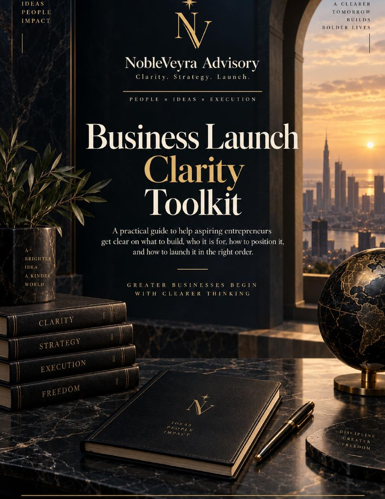
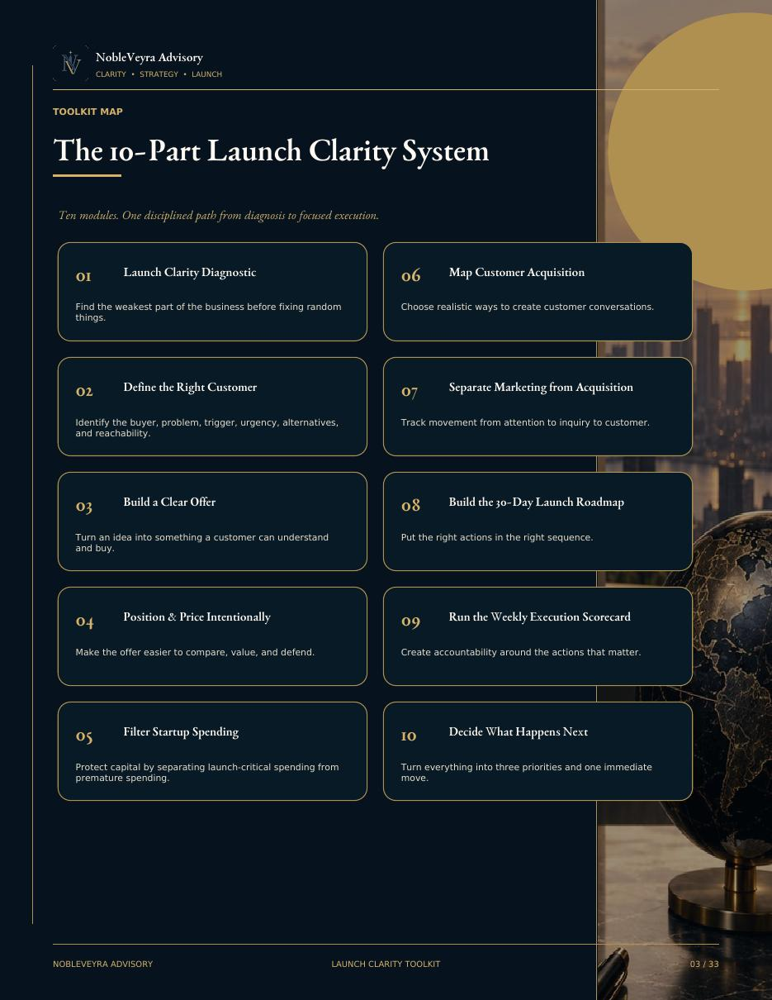
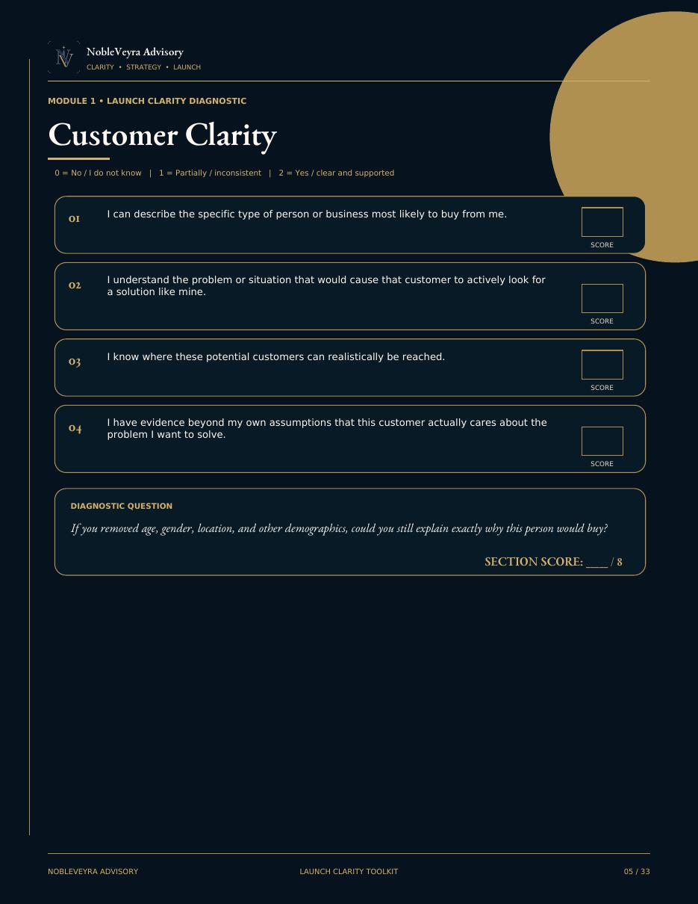
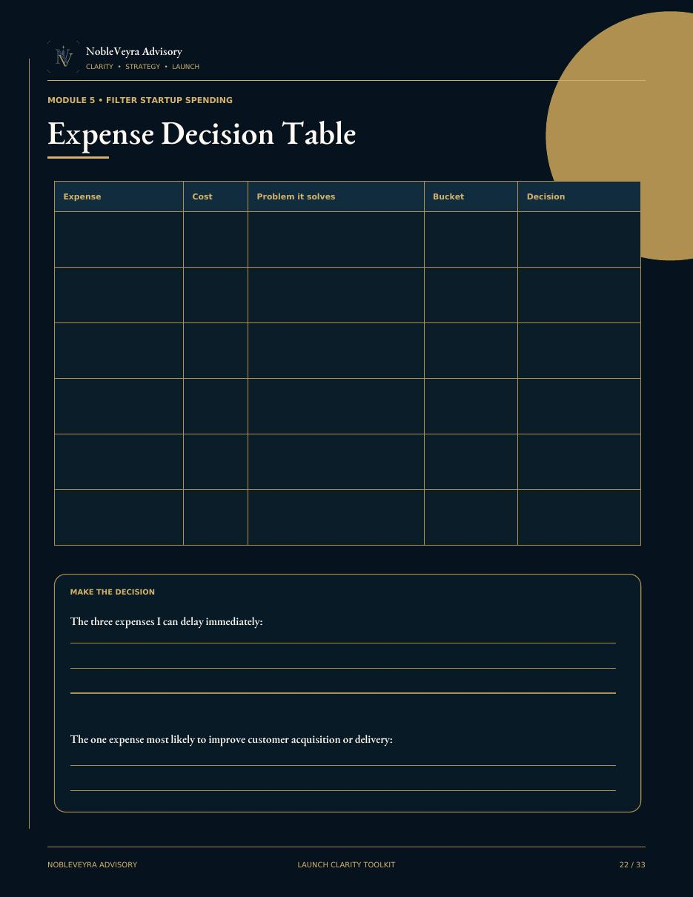
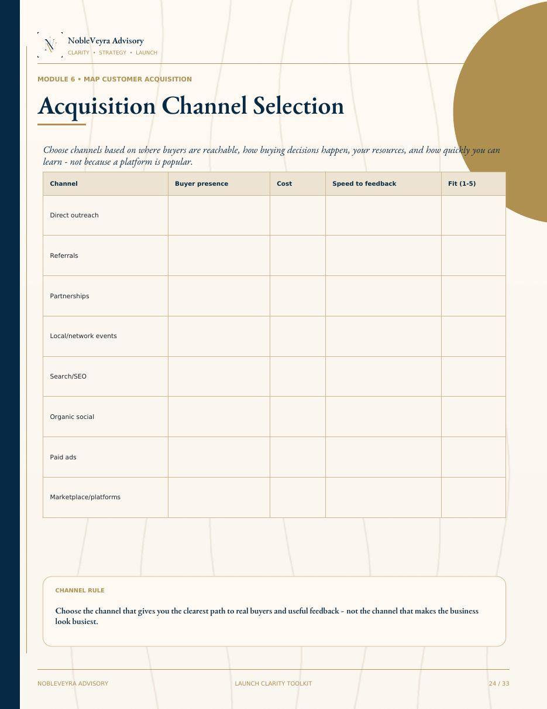

Without a diagnostic process
It is easy to mistake branding for validation, content for acquisition, attention for customers, and a long task list for a launch strategy.
NobleVeyra Launch Clarity Toolkit
A premium 33-page business launch workbook built to help aspiring entrepreneurs diagnose what is holding the business back, protect startup capital, and turn scattered ideas into a focused 30-day launch plan.
The Toolkit is not another giant course and it is not a collection of generic prompts. It is a structured NobleVeyra decision system built around one operating principle: diagnosis before action.
The Problem
Early-stage entrepreneurs are often trying to solve several problems at once. The result is more research, more spending, more content, and more activity without knowing which constraint actually deserves attention first.
It is easy to mistake branding for validation, content for acquisition, attention for customers, and a long task list for a launch strategy.
Clarity should lead to a decision. A decision should lead to action. Action should create feedback. Feedback should improve the next decision.
Inside the Toolkit
Ten focused areas designed to move you from diagnosis to clear decisions and customer-facing execution.
Find the weakest part of the business before fixing random things.
Identify the buyer, problem, trigger, urgency, alternatives, and reachability.
Turn an idea into something a customer can understand and buy.
Make the offer easier to compare, value, and defend.
Separate launch-critical spending from premature spending.
Choose realistic ways to create conversations with potential buyers.
Track movement from attention to inquiry to conversation to customer.
Put the right actions in the right sequence.
Create accountability around actions that actually move the business.
Turn everything into three priorities and one immediate move.
The NobleVeyra Method
The Toolkit is designed to help you make better decisions in the right order instead of adding more complexity.
Identify the real constraint before changing anything.
Work through the business areas connected to that constraint.
Choose the few decisions that matter most now.
Turn decisions into customer-facing action.
Use real market feedback to improve the next decision.
Preview the Product
The Toolkit combines executive-style diagnostics, structured worksheets, decision rules, and large working areas. It is designed to be used, not merely read.





Who It Is For
Choose Your Level of Support
Use NobleVeyra's framework to think through the business yourself.
Apply personalized diagnosis, judgment, and prioritization to your specific business.
Execute the strategy with ongoing guidance, accountability, and decision support.
Get Clear Before You Build More.
The goal is not to leave with twenty new ideas. The goal is to leave with fewer uncertainties, clearer priorities, and one move you can make now.
Digital product. One-time purchase. No guarantee of revenue, customers, financing, or business success.